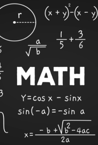

Matemática e suas Tecnologias.
Aqui possui as atividades realizadas para a área de Matemática no 1º e 2º trimestre do 3º ano do Ensino Medio de Desenvolvimento de Sistemas

Aqui possui as atividades realizadas para a área de Matemática no 1º e 2º trimestre do 3º ano do Ensino Medio de Desenvolvimento de Sistemas